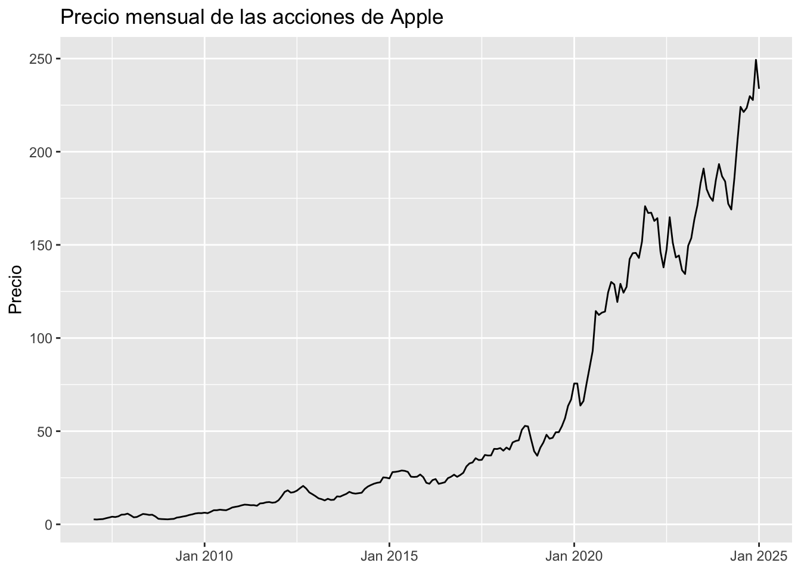

library(data.table)
library(forecast)
library(quantmod)
library(ggplot2)
library(scales)Demo
¿Qué vamos a hacer?
Vamos a crear un procedimiento automático para obtener pronósticos mensuales de precios de acciones con datos procedentes de Yahoo Finanzas, aunque el mismo procedimiento se podría aplicar a cualquier otra serie.
Librerías necesarias
Deberás tener instalados los siguientes paquetes (y sus dependencias) para seguir la demo.
Obtención y preparación de los datos
Para obtener los datos, gracias al paquete quantmod, sólo necesitamos conocer el identificador de la acción de la que queremos obtener el histórico de precios. En este enlace tenéis una gran lista de identificadores con los que podéis probar.
Elijamos, por ejemplo, las acciones de Apple, cuyo identificador es AAPL.
datos_yahoo <- getSymbols('AAPL', src = 'yahoo', auto.assign = FALSE)Veamos qué contiene el objeto datos_yahoo
datos_yahoo AAPL.Open AAPL.High AAPL.Low AAPL.Close AAPL.Volume
2007-01-03 3.081786 3.092143 2.925000 2.992857 1238319600
2007-01-04 3.001786 3.069643 2.993571 3.059286 847260400
2007-01-05 3.063214 3.078571 3.014286 3.037500 834741600
2007-01-08 3.070000 3.090357 3.045714 3.052500 797106800
2007-01-09 3.087500 3.320714 3.041071 3.306071 3349298400
2007-01-10 3.383929 3.492857 3.337500 3.464286 2952880000
2007-01-11 3.426429 3.456429 3.396429 3.421429 1440252800
2007-01-12 3.378214 3.395000 3.329643 3.379286 1312690400
2007-01-16 3.417143 3.473214 3.408929 3.467857 1244076400
2007-01-17 3.484286 3.485714 3.386429 3.391071 1646260000
...
2025-01-13 233.529999 234.669998 229.720001 234.399994 49630700
2025-01-14 234.750000 236.119995 232.470001 233.279999 39435300
2025-01-15 234.639999 238.960007 234.429993 237.869995 39832000
2025-01-16 237.350006 238.009995 228.029999 228.259995 71759100
2025-01-17 232.119995 232.289993 228.479996 229.979996 68488300
2025-01-21 224.000000 224.419998 219.380005 222.639999 98070400
2025-01-22 219.789993 224.119995 219.789993 223.830002 64126500
2025-01-23 224.740005 227.029999 222.300003 223.660004 60234800
2025-01-24 224.779999 225.630005 221.410004 222.779999 54619500
2025-01-27 224.029999 232.149994 224.000000 229.860001 94132139
AAPL.Adjusted
2007-01-03 2.524615
2007-01-04 2.580652
2007-01-05 2.562274
2007-01-08 2.574927
2007-01-09 2.788827
2007-01-10 2.922289
2007-01-11 2.886137
2007-01-12 2.850587
2007-01-16 2.925301
2007-01-17 2.860528
...
2025-01-13 234.399994
2025-01-14 233.279999
2025-01-15 237.869995
2025-01-16 228.259995
2025-01-17 229.979996
2025-01-21 222.639999
2025-01-22 223.830002
2025-01-23 223.660004
2025-01-24 222.779999
2025-01-27 229.860001Como puedes ver, tiene un histórico diario que va desde 2007 hasta hace unos días. El significado de cada una de las columnas es
- Open: Precio de la acción cuando se abrió el mercado.
- High: Precio más alto que alcanzó la acción ese día.
- Low: Precio más bajo que alcanzó la acción ese día.
- Close: Precio de la acción cuando se cerró el mercado.
- Volume: El volumen de acciones.
- Adjusted: Precio de cierre ajustado.
Nosotros usaremos el precio de cierre ajustado, es decir, la columna AAPL.Adjusted.
Para ello, convertimos el objeto anterior a data.table y nos quedamos con las columnas 1 y 7, y cambiamos el nombre a otro más genérico.
dt <- as.data.table(datos_yahoo)
dt <- dt[, c(1, 7), with = FALSE]
setnames(dt, c("fecha", "precio"))
dt fecha precio
<Date> <num>
1: 2007-01-03 2.524615
2: 2007-01-04 2.580652
3: 2007-01-05 2.562274
4: 2007-01-08 2.574927
5: 2007-01-09 2.788827
---
4542: 2025-01-21 222.639999
4543: 2025-01-22 223.830002
4544: 2025-01-23 223.660004
4545: 2025-01-24 222.779999
4546: 2025-01-27 229.860001Nuestro objetivo es obtener pronósticos mensuales, no diarios, por lo que tendremos que tomar medias para cada mes. Para ello definimos las variables mes y año y calculamos medias como sigue
dt[, m_y := as.yearmon(fecha)]
dt <- dt[, .(precio = mean(precio)), .(m_y)]
dt m_y precio
<yearmon> <num>
1: Jan 2007 2.677705
2: Feb 2007 2.582698
3: Mar 2007 2.729574
4: Apr 2007 2.823021
5: May 2007 3.277948
---
213: Sep 2024 223.512093
214: Oct 2024 229.803258
215: Nov 2024 227.749033
216: Dec 2024 249.322856
217: Jan 2025 233.783125Ahora ya podemos, por ejemplo, hacer un gráfico de la serie
ggplot(data = dt, aes(x = m_y, y = precio)) +
geom_line() +
scale_x_yearmon() +
labs(title = "Precio mensual de las acciones de Apple", x = NULL, y = "Precio")
Convertir los datos a serie temporal
La mayoría de modelos de series temporales con R usan un objeto nativo llamado ts, luego debemos convertir nuestros datos a este tipo de objeto.
Para ello, únicamente necesitamos:
- Los valores de la serie temporal
- Cuándo empieza esta serie temporal: el día, mes, trimestre, …
- La frecuencia de la serie, es decir, si es anual, mensual, trimestral, …
En nuestro caso, la serie comienza en enero de 2007 y su frecuencia es mensual, luego daremos un 12 a este valor.
valores_serie <- dt$precio
empieza <- c(2007, 1) # c(2007, 1)
frecuencia <- 12
serie_stock <- ts(valores_serie, start = empieza, frequency = frecuencia)
serie_stock Jan Feb Mar Apr May Jun
2007 2.677705 2.582698 2.729574 2.823021 3.277948 3.666274
2008 4.831661 3.770445 3.941263 4.765658 5.566192 5.377183
2009 2.674496 2.834144 2.937502 3.615833 3.860704 4.203522
2010 6.257772 5.989058 6.730629 7.566274 7.575702 7.867448
2011 10.194268 10.579969 10.468748 10.255591 10.296842 9.974384
2012 12.911635 14.990166 17.398394 18.256862 17.011731 17.309660
2013 15.130926 13.948388 13.507684 12.832789 13.714011 13.095388
2014 16.745610 16.490317 16.713217 16.959581 18.987558 20.273182
2015 24.639236 28.026753 28.163723 28.458956 28.884130 28.693536
2016 22.293041 21.785516 23.743501 24.306367 21.740423 22.136561
2017 27.683785 31.051569 32.698097 33.225715 35.491659 34.517362
2018 40.934914 39.549440 41.217779 40.116591 43.934444 44.726109
2019 36.812253 41.135351 43.955140 48.085189 45.984683 46.453525
2020 75.599325 75.583306 63.759704 66.175092 75.464749 84.239639
2021 130.090743 128.769443 119.350544 129.086470 124.329423 127.486779
2022 167.123895 167.271258 162.853396 164.341502 146.395033 137.923060
2023 134.366019 149.541184 153.586283 163.577617 171.227995 182.896663
2024 186.809099 184.037743 172.073872 168.993062 185.788819 205.798268
2025 233.783125
Jul Aug Sep Oct Nov Dec
2007 4.100271 3.911754 4.280400 5.176079 5.261870 5.739284
2008 5.053711 5.153757 4.255193 2.982660 2.830117 2.757906
2009 4.498462 5.009480 5.356123 5.809370 6.034978 5.993841
2010 7.680799 7.571535 8.250222 9.066153 9.387116 9.685305
2011 11.214297 11.350608 11.824523 11.967223 11.593208 11.837693
2012 18.108190 19.424663 20.621559 19.203938 17.137447 16.171399
2013 13.206767 14.997542 14.874633 15.635434 16.331662 17.437685
2014 21.098462 21.806692 22.294922 22.550135 25.211445 25.033373
2015 28.138701 25.556299 25.438494 25.565323 26.744814 25.304859
2016 22.579698 24.783100 25.535411 26.652586 25.491222 26.471903
2017 34.626665 37.232110 36.944753 36.993692 40.510236 40.437656
2018 45.126845 50.713869 52.843024 52.550810 45.622506 39.223988
2019 49.401837 49.476933 52.677435 56.855846 63.589980 67.021712
2020 93.121092 114.467585 112.381901 113.639155 114.200726 124.471608
2021 142.378919 145.537911 145.703331 143.009078 151.728551 170.755617
2022 147.662554 164.836090 151.159879 143.266590 144.291704 136.441855
2023 190.963670 179.877997 175.907835 173.588407 184.895114 193.361219
2024 224.092422 221.316174 223.512093 229.803258 227.749033 249.322856
2025 Entrenando el modelo
Nos quedamos con la serie sin los últimos 6 datos
Como ya comentamos en el caso de uso de forecasting, necesitamos quitar algún valor a la serie, en este caso 6, para evaluar qué tal hace las predicciones, para ello cogemos la serie original menos los últimos 6 valores usando la función head.
serie_stock_train <- utils::head(serie_stock, -6)
serie_stock_train Jan Feb Mar Apr May Jun
2007 2.677705 2.582698 2.729574 2.823021 3.277948 3.666274
2008 4.831661 3.770445 3.941263 4.765658 5.566192 5.377183
2009 2.674496 2.834144 2.937502 3.615833 3.860704 4.203522
2010 6.257772 5.989058 6.730629 7.566274 7.575702 7.867448
2011 10.194268 10.579969 10.468748 10.255591 10.296842 9.974384
2012 12.911635 14.990166 17.398394 18.256862 17.011731 17.309660
2013 15.130926 13.948388 13.507684 12.832789 13.714011 13.095388
2014 16.745610 16.490317 16.713217 16.959581 18.987558 20.273182
2015 24.639236 28.026753 28.163723 28.458956 28.884130 28.693536
2016 22.293041 21.785516 23.743501 24.306367 21.740423 22.136561
2017 27.683785 31.051569 32.698097 33.225715 35.491659 34.517362
2018 40.934914 39.549440 41.217779 40.116591 43.934444 44.726109
2019 36.812253 41.135351 43.955140 48.085189 45.984683 46.453525
2020 75.599325 75.583306 63.759704 66.175092 75.464749 84.239639
2021 130.090743 128.769443 119.350544 129.086470 124.329423 127.486779
2022 167.123895 167.271258 162.853396 164.341502 146.395033 137.923060
2023 134.366019 149.541184 153.586283 163.577617 171.227995 182.896663
2024 186.809099 184.037743 172.073872 168.993062 185.788819 205.798268
Jul Aug Sep Oct Nov Dec
2007 4.100271 3.911754 4.280400 5.176079 5.261870 5.739284
2008 5.053711 5.153757 4.255193 2.982660 2.830117 2.757906
2009 4.498462 5.009480 5.356123 5.809370 6.034978 5.993841
2010 7.680799 7.571535 8.250222 9.066153 9.387116 9.685305
2011 11.214297 11.350608 11.824523 11.967223 11.593208 11.837693
2012 18.108190 19.424663 20.621559 19.203938 17.137447 16.171399
2013 13.206767 14.997542 14.874633 15.635434 16.331662 17.437685
2014 21.098462 21.806692 22.294922 22.550135 25.211445 25.033373
2015 28.138701 25.556299 25.438494 25.565323 26.744814 25.304859
2016 22.579698 24.783100 25.535411 26.652586 25.491222 26.471903
2017 34.626665 37.232110 36.944753 36.993692 40.510236 40.437656
2018 45.126845 50.713869 52.843024 52.550810 45.622506 39.223988
2019 49.401837 49.476933 52.677435 56.855846 63.589980 67.021712
2020 93.121092 114.467585 112.381901 113.639155 114.200726 124.471608
2021 142.378919 145.537911 145.703331 143.009078 151.728551 170.755617
2022 147.662554 164.836090 151.159879 143.266590 144.291704 136.441855
2023 190.963670 179.877997 175.907835 173.588407 184.895114 193.361219
2024 224.092422 Entrenamos el modelo ARIMA
Entrenamos un modelo ARIMA con la función auto.arima, que es un procedimiento automático que hace la selección de el mejor modelo ARIMA posible y todos los ajustes por nosotros. Si tenéis más interes en modelos de series temporales con R, os recomiento empezar por este libro o cualquiera de sus ediciones, que es del autor de auto.arima.
arima_train <- auto.arima(serie_stock_train)Ahora podemos representar fácilmente la serie temporal junto con la predicciones para los 6 últimos meses que nos da auto.arima
pron_ult_6m <- forecast(arima_train, 6)
pron_ult_6m Point Forecast Lo 80 Hi 80 Lo 95 Hi 95
Aug 2024 230.3275 224.0619 236.5932 220.7451 239.9100
Sep 2024 232.7125 222.1859 243.2391 216.6134 248.8116
Oct 2024 235.0975 221.4826 248.7124 214.2753 255.9197
Nov 2024 237.4825 221.2656 253.6994 212.6809 262.2841
Dec 2024 239.8675 221.3273 258.4077 211.5127 268.2222
Jan 2025 242.2525 221.5721 262.9328 210.6246 273.8804autoplot(pron_ult_6m) +
xlim(c(2022, NA)) +
labs(title = "Precio mensual de las acciones de Apple",
subtitle = "Preddicciones realizadas con auto.arima",
x = NULL,
y = "Precio")
Calculamos el error que comete nuestro modelo al predecir
La métrica de error que usaremos será el MAPE, cuya fórmula viene dada por
\[\text{MAPE} = \frac{1}{n}\sum_{i=1}^{n}\left\lvert\frac{A_i - F_i}{A_i}\right\lvert\]
es útil, por tanto, crear una función propia que lo calcule
#' Función que calcula el MAPE
#'
#' @param y_pred Valores pronosticados por el modelo.
#' @param y_true Valores originales de la serie.
#'
#' @return Un número que es el MAPE sobre 1, no en porcentaje.
#'
funcion_mape <- function(y_pred, y_true){
mean(abs(y_true - y_pred)/y_true)
}Debemos entonces obtener y_pred e y_true.
y_true es muy sencillo, pues son los últimos 6 valores de la serie original. Una forma rápida de hacerlo sin subíndices es la siguiente
y_true <- utils::tail(serie_stock, 6)Para calcular y_pred usamos los pronósticos que obtuvimos en el paso anterior
y_pred <- pron_ult_6m$meanFinalmente el MAPE resultaría
arima_mape <- funcion_mape(y_pred, y_true)
arima_mape[1] 0.03696791Reentrenamos el modelo con mismos hiperparámetros y todos los datos
Una vez sabemos cuánto se equivoca el modelo, debemos reentrenarlo o reajustarlo para usar todos los datos disponibles (añadiendo los 6 valores que quitamos en un inicio). Hacer esto no tiene por qué ser sencillo, pero en caso de auto.arima sí que lo es, sólo basta con indicarle a la función Arima el modelo anterior y los datos completos.
refit_arima <- Arima(serie_stock, model = arima_train)Generamos los pronósticos futuros de la serie
Ahora, al igual que hicimos antes, con la función forecast, repetimos para dar pronósticos futuros de la serie y podemos pintarlos también.
pron_prox_6m <- forecast(refit_arima, 6)
pron_prox_6m Point Forecast Lo 80 Hi 80 Lo 95 Hi 95
Feb 2025 227.7449 221.4792 234.0105 218.1624 237.3273
Mar 2025 229.7867 219.2601 240.3133 213.6876 245.8858
Apr 2025 231.8285 218.2136 245.4434 211.0063 252.6507
May 2025 233.8703 217.6534 250.0872 209.0687 258.6719
Jun 2025 235.9121 217.3720 254.4522 207.5574 264.2668
Jul 2025 237.9539 217.2736 258.6342 206.3261 269.5817autoplot(pron_prox_6m) +
xlim(c(2021, NA)) +
labs(title = "Precio mensual de las acciones de Apple",
subtitle = "Preddicciones realizadas con auto.arima",
x = NULL,
y = "Precio")
Calculamos cuál va a ser el incremento de la serie en los próximos meses
Como ocurría con el MAPE, aquí también es conveniente crear una función que nos calcule el incremento entre dos valores.
#' Función que calcula el incremento
#'
#' @param x0 Valor numérico, más reciente.
#' @param x1 Valor numérico, más tardío.
#'
#' @return El incremento (sobre 1) entre los dos valores especificados
#'
funcion_incremento <- function(x0, x1){
x1/x0 - 1 # ( (x1 - x0)/x0 )
}En nuestro caso, calcularemos el incremento entre el último valor de la serie conocido y el último valor pronosticado.
x0 <- as.numeric(tail(serie_stock, 1))
x1 <- as.numeric(tail(pron_prox_6m$mean, 1))
inc <- funcion_incremento(x0, x1)Luego pronosticamos que la serie de stock mensual de APPLE tendrá un incremento percentual del 1.78 % en los próximos 6 meses con un MAPE en test del 3.7 %.
Lo bueno de todo esto
Gracias a que R es un lenguaje de programación, hemos creado un procedimiento reproducible y reutilizable todas las veces que queramos. Para repetir este análisis para otra serie de Stock, lo único que tenemos que cambiar es el input, el identificador de la acción.
Es decir, cambiando en la línea 38 AAPL por cualquier otro identificador, por ejemplo, MSFT que es Microsoft, se repetiría todo el proceso de un plumazo!